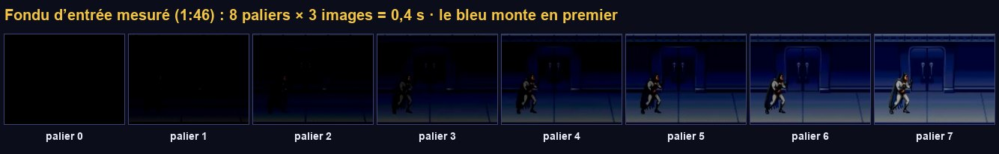
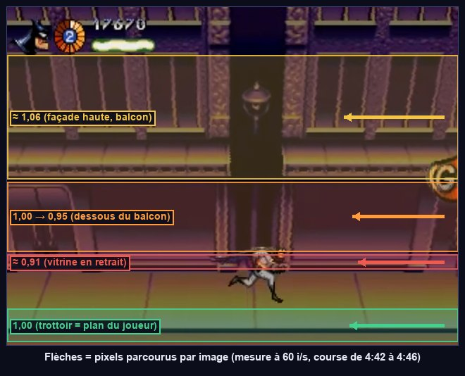
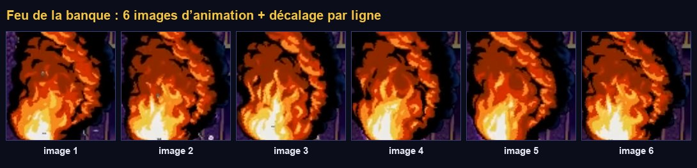
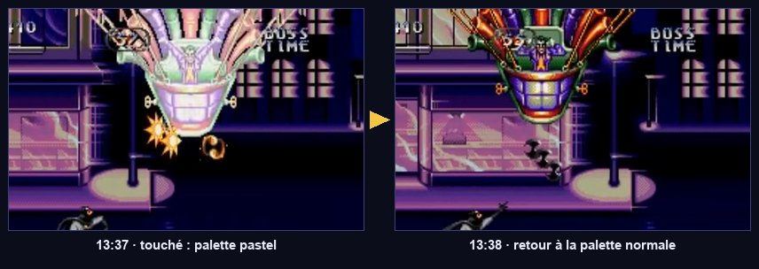
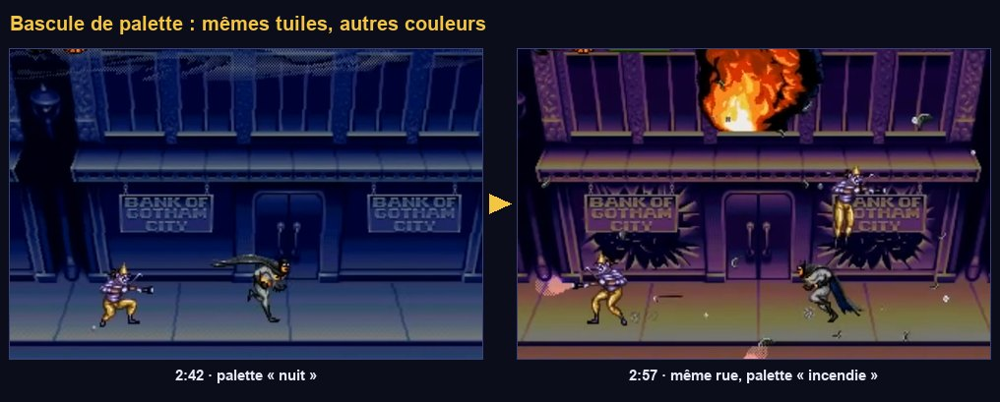
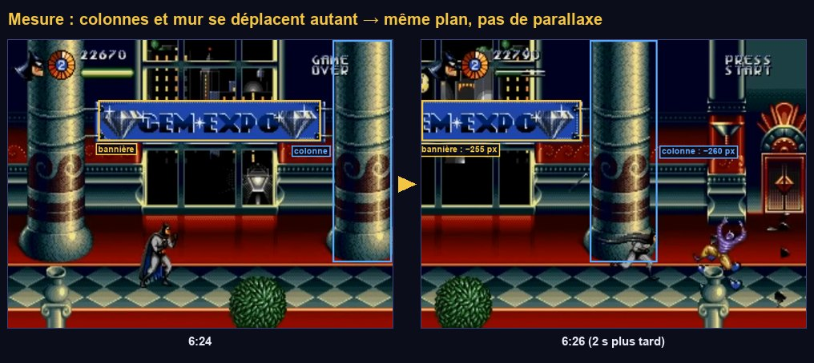

Effets Mega Drive
On donne au jeu son grain de 1995 : des fondus en 8 paliers, une façade dont chaque ligne défile à sa propre vitesse, un feu qui ondule, des flashs de palette. Tu vas écrire tes premiers shaders, et comprendre comment la console faisait « l'impossible ».
Ce que tu vas apprendre
Godot 4
- Shaders
canvas_item:fragment(),vertex(), uniformes,varying ShaderMaterialet paramètres depuis le code- Autoload d'une scène
Curve,Image,Parallax2D
Développement de jeu
- Séparer le calcul et l'affichage
- Les effets raster (par ligne)
- Couleurs indexées et palettes
- Séparer le visuel de la collision
- La parallaxe et la pseudo-3D par l'échelle
Premier contact avec les shaders
Un shader est un petit programme exécuté par la carte graphique pour chaque pixel d'un objet (la fonction fragment()), des millions de fois par seconde et en parallèle. Il reçoit la position du pixel (UV, de 0 à 1 sur l'objet) et doit écrire sa couleur (COLOR). Les paramètres réglables depuis l'extérieur sont des uniform. Le langage de Godot ressemble au GLSL.
Fondus et flashs
8.1 · PaletteFx : le post-traitement 9 bits

Chaque couleur de la console tient sur 9 bits : 3 bits par canal, donc 8 niveaux de rouge, de vert et de bleu. Un fondu au noir retire un niveau à chaque canal toutes les quelques images : 8 paliers visibles. Un fondu Godot lisse (modulate animé) n'a pas ce grain. On le recrée avec un post-traitement plein écran.
- Crée le shader : clic droit sur
res://fx/→ Nouveau → Ressource → Shader (ou Nouveau shader), modecanvas_item, nompalette_fx.gdshader, et tape le code. - Nouvelle scène, racine
CanvasLayernomméePaletteFx, scriptpalette_fx.gd. EnfantColorRectnomméRect: barre d'outils Ancres → Rect complet ; Inspecteur Material → Nouveau ShaderMaterial, puis Shader =palette_fx.gdshader. Enregistre enres://fx/palette_fx.tscn. - : ajoute la scène
res://fx/palette_fx.tscn, nomPaletteFx, juste aprèsGame. - Dans
test_room.gd, ajoute ces deux cas dans lematch event.keycode:
F : l'écran s'assombrit en 8 paliers bien visibles (0,4 s), avec une teinte qui change en route, puis revient. G : flash blanc de 2 images. Les couleurs de tout le jeu sont maintenant limitées à 8 niveaux par canal : les dégradés deviennent des aplats, comme sur la console.
Comprendre le code
hint_screen_texture: le shader lit ce qui est déjà dessiné à l'écran sous lui. Comme leCanvasLayerest sur la couche 100, au-dessus de tout, il voit l'image entière et la retouche.floor(c * 7.0 + 0.5): ramène chaque canal (0 à 1) à un niveau entier de 0 à 7. Le fondu retirefadeniveaux à chaque canal : un canal à 2 atteint 0 avant un canal à 7, d'où la teinte qui tourne.- Un autoload peut être une scène, avec ses nœuds enfants : pratique pour un effet qui a besoin d'un
ColorRectet d'un matériau. process_mode = ALWAYS: les fondus marcheront même quand le jeu sera en pause.await get_tree().physics_frame: attend un tick. Compter des ticks plutôt que des secondes donne des paliers d'exactement 3 images, comme sur la console.
8.2 · Brancher le crâne sur PaletteFx
Le flash du crâne (étape 06) utilisait un rectangle blanc. Remplace le corps de Fx.flash_screen() pour passer par la palette :
Tous ceux qui appellent Fx.flash_screen() continuent de fonctionner sans modification : seul l'intérieur de la fonction a changé. C'est l'intérêt de passer par une fonction plutôt que de dupliquer le code du flash partout.
Le plan raster
8.3 · Le principe
L'écran est dessiné ligne par ligne. Entre deux lignes, le processeur vidéo lit une table H-Scroll qui contient un décalage horizontal par ligne. À chaque image, le programme calcule une table de 224 valeurs, et le matériel l'applique gratuitement. Décaler chaque ligne d'une quantité différente donne du relief à une image plate : c'est le « secret #1 » de Jon Burton.

On reproduit exactement la division du travail de la console. Un script GDScript joue le rôle du processeur : à chaque image, il remplit deux tableaux de 224 valeurs (h_scroll : décalage de chaque ligne ; v_line : quelle ligne de l'image source afficher). Un shader joue le rôle du processeur vidéo : pour chaque pixel, il lit la valeur de sa ligne. Un seul shader suffira pour la façade, l'intro en perspective ou d'autres effets : seules les tables changeront.
Comprendre le code
uniform float h_scroll[224]: un tableau de paramètres. Le script lui envoie unPackedFloat32Arrayde la même taille à chaque image (448 nombres en tout : rien pour une carte graphique).floor(UV * screen_size):UVva de 0 à 1 sur le rectangle ; multiplié par 320×224, il donne le pixel d'écran. La partie entière de y est le numéro de ligne.repeat_enable: quand on lit au-delà du bord de la texture, on retombe au début. La façade boucle à l'infini sans calcul.duplicate(): un matériau est une ressource partagée. Sans copie, deux plans raster partageraient les mêmes tables.- Le placement dans un
CanvasLayerrend le rectangle fixe à l'écran : il ne défile pas avec la caméra. C'est la table qui simule le défilement.
8.4 · Une texture de test générée par script
Pour régler une façade, une image de test vaut mieux que le vrai décor : des bandes de couleur montrent la vitesse de chaque ligne, et des lignes repères indiquent le balcon et le trottoir. Plutôt que de la dessiner, on la fait générer par un script d'éditeur.
- Crée ce script dans
res://tools/, puis . res://art/s1/facade_debug.pngapparaît dans le Système de fichiers. Double-clique dessus pour la voir.
8.5 · La façade pseudo-3D
- Dans
test_room.tscn, ajoute unCanvasLayernomméBackground, Layer = -10 (derrière le monde). - Enfant
ColorRectnomméFacade, scriptfacade_raster.gd. Material → Nouveau ShaderMaterial, shaderraster_plane.gdshader. Plane Texture =facade_debug.png. - Depth → Nouveau Curve, puis clique sur la courbe pour l'éditer. Dans l'Inspecteur de la courbe : Max Value = 1,2 ; Point Count = 9 ; renseigne la Position de chaque point, et règle Left Mode et Right Mode à
Linear:
| Point | 0 | 1 | 2 | 3 | 4 | 5 | 6 | 7 | 8 |
|---|---|---|---|---|---|---|---|---|---|
| x (ligne / 223) | 0,14 | 0,44 | 0,47 | 0,52 | 0,72 | 0,73 | 0,78 | 0,89 | 1,0 |
| y (facteur) | 1,06 | 1,06 | 1,0 | 1,0 | 0,95 | 0,91 | 0,91 | 1,0 | 1,0 |
- Les
ColorRectgris et bruns du sol et du balcon cachent la façade : rends-les semi-transparents (couleur avec alpha 0,4), pour voir la façade et vérifier l'alignement. - F6 et cours.
En courant, le haut de la façade (lignes 32–98) défile un peu plus vite que le sol, la vitrine (lignes 163–174) un peu moins vite. La ligne blanche (balcon) et la ligne jaune (trottoir) restent parfaitement calées sur les rectangles de collision : Batman marche dessus sans glisser. L'image plate a pris du relief.
La vidéo mesure 1,06 pour toute la bande 32–114, qui contient le balcon. Mais Batman marche sur le balcon (ligne 108 ≈ 0,48) : avec 1,06, il glisserait sur le décor. La courbe force donc 1,0 sur la tranche du balcon (points 2 et 3). Quand une mesure contredit une règle de jeu, c'est la règle de jeu qui gagne : elle se voit à chaque pas.
La façade est une image affichée par un shader ; elle ne sait rien de la physique. Le trottoir et le balcon sur lesquels Batman marche sont des StaticBody2D invisibles alignés avec elle. Le joueur ne marche jamais « sur l'image ». Presque tous les jeux 2D fonctionnent ainsi.
Le feu ondulant
8.6 · Le shader du feu

D'abord, une bande de 6 flammes de test, générée elle aussi :
- Exécute
make_debug_fire.gd. - Dans la salle de test, ajoute un
Sprite2DnomméFireen (300, 150) : Texture =fire_debug.png, Animation → Hframes = 6, scriptfire.gd. Material → Nouveau ShaderMaterial, shaderbillowing_fire.gdshader, et coche Resource → Local To Scene sur le matériau. - Duplique le foyer (Ctrl D) deux fois et décale les copies.
Les flammes changent d'image 12 fois par seconde et ondulent : presque immobiles en bas, très mobiles en haut. Les trois foyers ne sont pas synchronisés. Pendant que le jeu tourne, sélectionne un foyer dans l'arbre Distant et fais varier amplitude et power dans le matériau.
COLOR dans fragment()En entrée de fragment(), COLOR vaut déjà la couleur de la texture multipliée par la teinte. Écrire texture(TEXTURE, uv) * COLOR multiplierait la texture par elle-même (et ici par sa version non déformée). On recopie donc COLOR dans une varying depuis vertex(), où il ne contient que la teinte. Retiens ce motif : tu le retrouveras dans les deux shaders suivants.
Sans cette case, les trois foyers partageraient le même matériau, donc le même time_offset : ils onduleraient à l'unisson. « Local To Scene » donne à chaque instance sa propre copie de la ressource.
Le flash de dégâts
8.7 · HitFlash

- Ouvre
sandbox/dummy.tscn. Sur leColorRect: Material → Nouveau ShaderMaterial, shaderhit_flash.gdshader, Local To Scene coché. - Ajoute un nœud
HitFlash: Target =ColorRect, Hurtbox =Hurtbox, Amount = 0,55.
Chaque coup sur la cible la fait clignoter vers le pastel pendant 0,12 s. Un ColorRect n'a pas de texture : Godot lui fournit une texture blanche, et tint contient sa couleur. Le même nœud servira aux boss.
HitFlash ne sait pas à qui il appartient : il relie une Hurtbox à un sprite. On l'ajoute à n'importe quel objet touchable, sans modifier son script. C'est un composant de plus dans ta boîte.
Couleurs indexées (facultatif)
8.8 · Changer l'ambiance sans redessiner

Une image indexée stocke pour chaque pixel un numéro de couleur, pas une couleur. Une palette, à part, dit quelle couleur correspond à chaque numéro. On change l'ambiance d'un décor entier (nuit → incendie) en changeant 16 couleurs, sans redessiner un pixel. L'étape 09 propose une version simple de la bascule de la banque (échange de texture) ; cette section est la version fidèle, à faire si tu es curieux.
- Exécute
indexer.gd: la Sortie annonce « 15 couleurs » (14 + le transparent). Deux fichiers apparaissent :facade_debug_idx.png(gris très sombre, c'est normal) etfacade_debug_pal.png(16×1). - Sélectionne
facade_debug_idx.png→ onglet Import : Compress → Mode =Lossless, Mipmaps décoché → Réimporter. Une compression mélangerait les index. - Dans ton logiciel de dessin, ouvre
facade_debug_pal.png, agrandis le canevas à 16×2, recopie la ligne du haut en bas, puis repeins la ligne du bas en tons violets et ocre (ambiance incendie). Enregistre sousfacade_debug_pal2.pnget importe-le avec les mêmes réglages. - Dans
sandbox/, une scène avec unSprite2D: texturefacade_debug_idx.png, matériauindexed.gdshader, palette =facade_debug_pal2.png.
Dans l'éditeur (pas besoin de lancer), fais glisser blend_step de 0 à 7 dans le matériau : la façade passe de la palette « nuit » à la palette « incendie » en 8 paliers, sans qu'un seul pixel de forme change.
Parallaxe et échelle
8.9 · Deux outils pour la suite

Parallax2DPour une couche qui défile d'un bloc (ciel, skyline, rue du convoi), pas besoin de raster : le nœud Parallax2D (Godot 4.3+) suffit. Scroll Scale < 1 = derrière le plan de jeu (bouge moins), > 1 = devant. Repeat Size fait boucler l'image. Autoscroll la fait défiler toute seule. Tu l'utiliseras aux étapes 11 et 12.
La console ne sait pas agrandir un sprite. Pour simuler la profondeur (la montgolfière du Joker qui approche, les sphères du grappin), le jeu stocke quelques tailles pré-calculées. Godot sait agrandir en continu, mais un agrandissement lisse trahirait le remake. On arrondit donc l'échelle à des paliers. Ajoute cette fonction à fx.gd :
Point de contrôle
- La façade de test s'affiche derrière la salle ; en courant, le haut et la vitrine défilent à des vitesses différentes, et les lignes repères restent calées sur les sols de collision.
- Les foyers de 6 images ondulent : immobiles en bas, très mobiles en haut, désynchronisés.
PaletteFx.fade_out()assombrit l'écran en 8 paliers visibles ;flash_white()blanchit 2 images ; le crâne passe par la palette.- La cible clignote en pastel quand on la touche.
- (Facultatif) Un décor indexé passe de la palette « nuit » à la palette « incendie » en 8 paliers.
Ce que tu retiens
Pourquoi le plan raster est-il dans un CanvasLayer et non dans le monde ?
Parce qu'il représente l'écran, pas un objet du monde : il doit rester fixe devant la caméra. C'est la table h_scroll, calculée à partir de la position de la caméra, qui simule le défilement, ligne par ligne.
Pourquoi les lignes où l'on marche doivent-elles valoir exactement 1 ?
Parce que les personnages et le sol de collision défilent à la vitesse de la caméra (facteur 1). Si le décor sous leurs pieds défilait plus vite ou plus lentement, ils sembleraient glisser.
Que vaut COLOR au début de fragment() dans un shader canvas_item de Godot 4 ?
La couleur de la texture multipliée par la teinte (modulate). Pour récupérer la teinte seule, on la copie dans une varying depuis vertex().
Que gagne-t-on à stocker une image en couleurs indexées ?
On sépare la forme (les index) de la couleur (la palette). Changer quelques couleurs de la palette recolore instantanément tout ce qui l'utilise : fondus, flashs, changements d'ambiance, variantes d'ennemis.
Pour aller plus loin
- Écris un
RasterPlanequi ondule toute l'image comme une vague de chaleur :h_scroll[y] = sin(TIME + y × 0,1) × 3. Un nouveau script, le même shader. - Écris un
RasterPlanequi écrase l'image verticalement en jouant surv_line(le « secret #5 » de Burton, les immeubles en 3D). - Lis le tome 06 en entier : il explique chaque effet côté console.